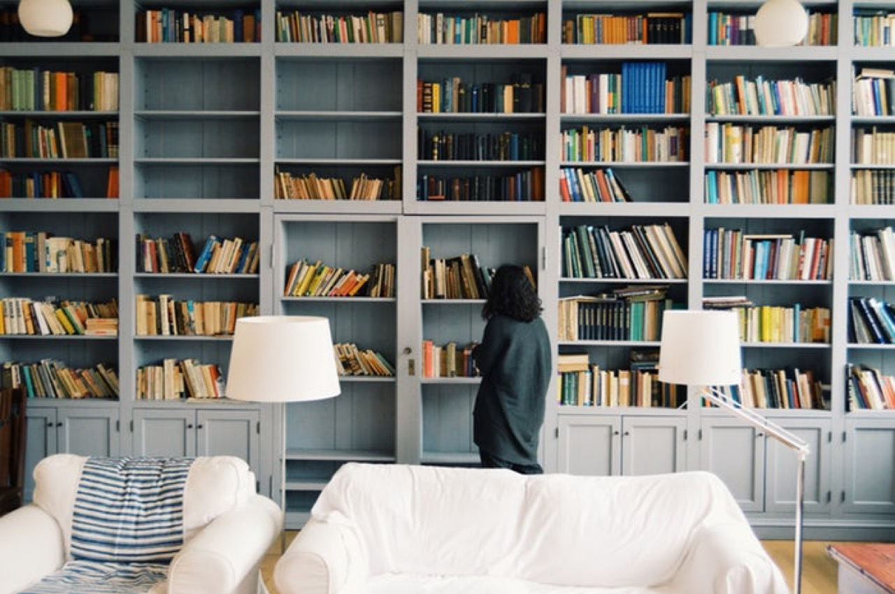

Bookcase Wallpapers: Digital Tributes to Knowledge, Organization, and Literary Aesthetics
Bookcase wallpapers represent a sophisticated and intellectually appealing category of digital imagery that celebrates the beauty of books, knowledge, and organized spaces dedicated to reading and learning. These wallpapers transform device screens into virtual libraries, evoking the warmth of bookstores, the comfort of personal libraries, and the aesthetic pleasure of well-curated collections. For book lovers, intellectuals, students, and anyone who values the visual appeal of literature, bookcase wallpapers offer a meaningful way to personalize their digital environments.
The enduring appeal of bookcase wallpapers stems from the complex emotions and associations that books and libraries evoke in viewers. Books represent knowledge, imagination, adventure, and escape. A well-organized bookcase suggests both intellectual discipline and aesthetic sensibility. For many people, photographs or images of bookshelves trigger nostalgic memories of childhood libraries, bookstores discovered during travels, or personal collections accumulated over years of passionate reading. When applied as wallpapers, these images create a sense of intellectual community and shared values with others who also appreciate literature.
Photorealistic bookcase wallpapers capture actual library spaces and personal collections with stunning clarity and detail. These images often feature extensive shelves filled with books in varying sizes, colors, and conditions, creating visually complex compositions that reward close examination. Photographers capture lighting that highlights the spines of books, the texture of leather bindings, the wear patterns on pages, and the subtle variations in wood grain on shelving units. Many of these wallpapers are taken in actual libraries, bookstores, or private collections, lending authenticity and historical context to the images.
The color palettes found in bookcase wallpapers are remarkably diverse, reflecting both the variety of book designs and the aesthetics of different library spaces. Traditional libraries feature warm wood tones in shelving, often complemented by rich jewel tones in book covers. Modern minimalist libraries showcase clean lines, neutral color schemes, and carefully curated collections with coordinated aesthetics. Academic libraries display the varied colors of countless educational texts, creating visually chaotic but intellectually stimulating compositions. Vintage wallpapers might feature faded leather spines and aged paper tones, while contemporary collections display bright, colorful modern book covers.
The architectural and design elements of bookshelves significantly influence bookcase wallpapers. Library wallpapers might feature floor-to-ceiling built-in shelving, the architectural centerpiece of intellectual spaces. Freestanding bookcase wallpapers showcase individual pieces of furniture, from simple wooden units to elaborate antique designs crafted from dark oak or mahogany. Some wallpapers feature open shelving with visible walls behind the books, while others show enclosed cases with glass doors that protect the collection from dust and damage. Corner bookcase wallpapers cleverly fill the visual space while creating a sense of cozy enclosure.
The organization systems depicted in bookcase wallpapers reflect different aesthetic and practical philosophies. Rainbow-organized collections, where books are arranged by color, create visually striking compositions that prioritize beauty over functionality. Subject-organized libraries, arranged by genre or topic, suggest intellectually rigorous approaches to knowledge management. Chronological arrangements by acquisition date tell stories of reading habits and life changes over time. Intentionally chaotic arrangements paradoxically create their own aesthetic appeal, suggesting well-loved, well-worn collections rather than pristine, rarely-consulted libraries.
Lighting plays a crucial role in the effectiveness of bookcase wallpapers. Warm incandescent lighting creates intimate, cozy atmospheres that invite relaxation and deep reading. Natural sunlight streaming through windows illuminates dust particles dancing between the books, creating an ethereal quality. Cool artificial lighting in academic or professional libraries creates more austere, intellectual moods. Candlelit bookcase wallpapers establish particularly romantic or nostalgic atmospheres, suggesting historical periods before electric lighting.
Decorative elements surrounding the books enhance the narrative quality of bookcase wallpapers. Framed photographs, plants, decorative objects, and personal mementos on shelves alongside books create lived-in spaces rather than sterile storage areas. Wallpapers featuring reading chairs positioned in front of bookshelves suggest the completion of the reading experience within these spaces. Some designs include small tables with reading lamps, cups of tea or coffee, or open books, creating scenes that viewers can imagine themselves inhabiting.
Artistic and illustrated bookcase wallpapers offer creative interpretations beyond photorealism. Digital artists create fantastical libraries featuring impossible architecture, such as books spiraling upward infinitely or shelves that seem to defy physics. Steampunk-inspired bookcase wallpapers incorporate mechanical elements, vintage machinery, and industrial design alongside literary collections. Minimalist illustrated wallpapers reduce bookshelves to essential geometric forms and color blocks while maintaining aesthetic appeal. Whimsical designs feature anthropomorphized books, magical libraries, and surreal interpretations of knowledge storage.
Specialty bookcase wallpapers cater to specific literary interests and book collecting communities. Fantasy enthusiasts might display wallpapers featuring libraries that seem to exist in magical realms, with floating books or glowing spines. Mystery and thriller fans appreciate dark, moody library settings that reflect the genres they love. Romance readers enjoy wallpapers featuring rose-toned lighting and romantic ambiance in library settings. Science fiction lovers appreciate futuristic library designs with holographic books or advanced technology integrated into traditional shelving.
The psychology behind bookcase wallpaper popularity relates to concepts of identity, aspirations, and intellectual self-image. People who use bookcase wallpapers often see themselves as intellectuals, passionate readers, or lifelong learners. The wallpaper serves as a daily affirmation of these identity aspects. For people still building personal libraries or working toward their ideal reading spaces, bookcase wallpapers provide inspiration and motivation. They suggest possibilities for future reading, learning, and personal development.
Bookcase wallpapers for mobile devices present particular design challenges and opportunities. The typically vertical orientation of smartphone screens means that vertical bookcase arrangements work better than horizontal ones. Some mobile wallpapers feature single shelves or partial shelf arrangements that fit naturally within the portrait format. Others creatively integrate the device's interface elements with the bookcase imagery, positioning app icons and notification areas to appear as if they're overlaid on the library scene.
Desktop computer wallpapers featuring bookshelves often take advantage of widescreen formats by showing expansive library views. Panoramic shots of entire rooms lined with shelves create immersive environments that make users feel surrounded by knowledge. Dual-monitor wallpapers can be split across screens in ways that create continuous library scenes. Gaming monitors with ultrawide aspect ratios showcase bookcase wallpapers in ways that emphasize the depth and scale of library spaces.
Thematic variations in bookcase wallpaper collections allow for personalization based on aesthetic preferences and seasonal moods. Warm, inviting library wallpapers create cozy environments perfect for fall and winter seasons. Bright, sunlit bookcase wallpapers with open windows and natural light appeal during spring and summer. Vintage or antique bookcase wallpapers evoke historical periods and scholarly traditions. Contemporary, minimalist designs appeal to modern sensibilities and reflect current interior design trends.
The intersection of bookcase wallpapers with interior design trends has created interesting parallels between digital and physical spaces. People who love bookcase wallpapers often aspire to recreate similar aesthetics in their actual homes and offices. Conversely, those who have successfully built impressive personal libraries often seek wallpapers that celebrate similar spaces, creating digital documentation of their accomplishments.
Bookcase wallpapers as educational tools deserve special mention. Teachers and librarians sometimes use these images in educational settings to inspire students about the value of reading and knowledge. The visual appeal of well-organized, beautiful libraries can motivate young people to engage with reading and appreciate literature as a core part of human culture and personal development.

Communities dedicated to bookcase wallpaper curation have developed extensive collections, with users sharing their favorite library photographs and artistic interpretations. Online forums and social media communities dedicated to book lovers often include sections where members share and discuss wallpapers featuring bookshelves and libraries. Professional interior designers and photographers specializing in bookcase photography have found audiences appreciating both the artistic and inspirational aspects of their work.
Bookcase wallpapers also serve practical functions in digital productivity environments. Students using computer wallpapers featuring organized bookshelves often report feeling more motivated to study and organize their own materials. Professionals in knowledge-intensive fields appreciate wallpapers that subtly reinforce the intellectual nature of their work. Writers and researchers find that bookcase wallpapers create atmospheres conducive to creative and analytical thinking.
The evolution of bookcase wallpaper aesthetics reflects broader cultural changes in reading habits and book culture. As e-books and digital reading have become more common, physical bookshelves have taken on increased symbolic weight as markers of committed, passionate reading. Bookcase wallpapers celebrate print culture and the tactile, aesthetic experience of physical books at a time when some worry about the future of traditional publishing and libraries.
Special edition bookcase wallpapers sometimes commemorate famous libraries and bookstores. Images of the Trinity College Library in Dublin, the Library of Congress, Shakespeare & Company bookstore in Paris, and other legendary literary spaces appear in wallpaper collections. These wallpapers allow people to feel connected to literary heritage and to carry images of culturally significant spaces with them in their digital environments.
Bookcase wallpapers occupy a special category within the world of digital imagery, appealing to those who value knowledge, literature, beauty, and intellectual pursuits. Whether photorealistic captures of actual libraries and collections or artistic interpretations of fantasy spaces filled with books, these wallpapers celebrate the enduring power and appeal of the written word. They serve practical functions in creating inspiring digital environments while also expressing personal identity and values. As reading culture continues to evolve and adapt to technological change, bookcase wallpapers remain powerful symbols of humanity's commitment to knowledge, imagination, and the transformative power of literature.